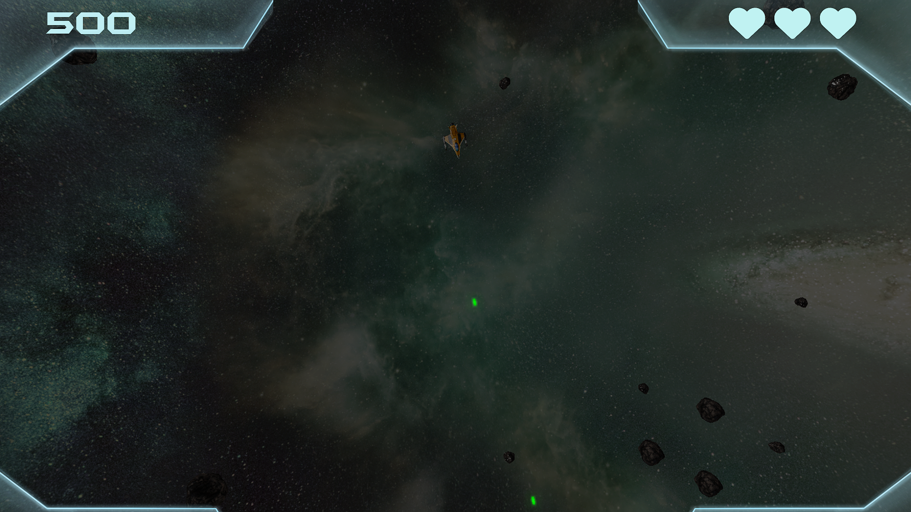
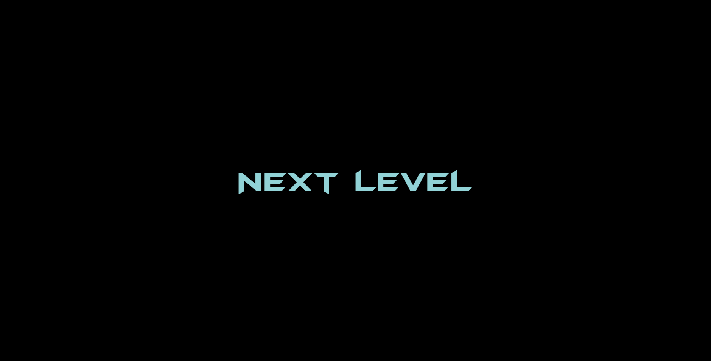
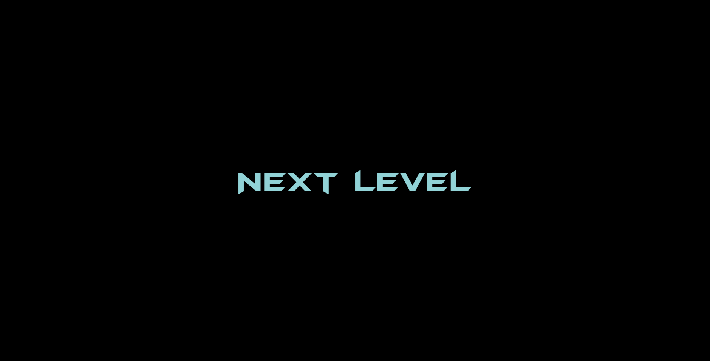

L'objectif de ce projet consiste à développer un clone 3D du jeu Asteroid. Le jeu doit tourner dans un navigateur Web et devra etre constitué de primitives graphiques 3D animées. La principale contrainte logicielle est de s'appuyer sur la bibliothèque Three.js.
Introduction :
Implementation du cahier des charges :
Déroulement du jeu :
Dans Asteroid_3D, traversez un ensemble de 3 niveaux aux particularités différentes et de plus en plus difficiles afin de mettre au défi vos compétences
de pilote ! Passer d'un niveau au cœur des zones les plus sombres de l'espace aux endroits les plus meurtriers où il vous faudra adresse et concentration
afin d'en ressortir vivant. En cas d'echec, n'abandonnez pas ! Il vous sera facilement possible de recommencer une partie en appuyant sur la touche "espace".
Attention, les asteroïds et bonus n'apparaîtront pas au même endroit.

Technologie logicielles :
L'utilisation de Three.js et des primitives 3D proposées ont permis la création d'objets animés comme par exemple la planète de l'ecran d'accueil ou encore les bonus qui apparaitront tout au long du jeu. Aucune autre bibliothèque n'a été utilisée dans ce projet afin d'avoir un rendu le plus authentique possible.
Fenetre graphique 3D :
Un mode plein écran vous est proposé avec la touche "f", pour une immersion totale ainsi qu'un mode capture d'écran avec la touche "p" afin de sauvegarder vos exploits. Il a été implémenté une adaptation dynamique de l'écran afin qu'il soit modulable à tous les formats.
Architecture logicielle :
Un modèle MVC (Modèle Vue Contrôleur) a été initialement utilisé pour la conception du logiciel de par son aspect lisible et simple à enrichir avec de nouvelles fonctionnalités. En pratique, je n'ai pas su tirer profits de ces atouts, notamment concernant l'implémentation de 3 niveaux différents. Il serait intéressant par la suite d'essayer d'autres méthodes d'organisation.
Graphisme :
L'utilisation de modèles 3D et de textures riches et détaillés au format ".obj" et ".mtl" ont permis d'avoir un contrôle précis sur les différentes propriétés des textures. Un travail sur le postprocessing permet une intégration réaliste dans l'environnement 3D afin de vous proposer une expérience visuelle et animée. Il vous est possible d'appréhender ce travail en désactivant la lueur sur les objets à l'aide de la touche "o" de votre clavier.

Dialogues avec l'utilisateur :
Vous saurez appréçier une interface dynamique et dans une esthétique rétro-futuriste rappelant le design d'un tableau de bord. La puissance du langage "css" a permis une intégration simple et rapide des différents éléments de l'interface tout en apportant une possibilité d'implémenter des animations. Les messages visuels sont accompagnés de la voix d'une intelligence artificiel provenant du tableau de bord de votre vaisseau. Malgré tout cela, vous êtes perdu ? Ne vous en fait pas ! L'appui sur la touche "h" vous offre un récapitulatif des différentes commandes du jeu !
 

Points de vue caméra :
Trois points de vue de caméra vous seront disponibles. Un fixe, et 2 suiveurs que vous pourrez changer à chaque instant à l'aide des touches "0", "1" et "2"!
Gestion des collisions :
Le système de collision est basé sur un modèle simplifié des règles de la physique du monde réel. La conservation de la vitesse et de la non prise en compte de la rotation offre une meilleure expérience de jeu. Le calcul des collisions est fait à l'aide de bounding box et de bounding sphère qui donnent une précision parfaite pour ce jeu.
Dynamique :
Chaque objet en plus de posséder des propriétés de base tel que la rotation, la position et l'echelle, possèdent une propriété en plus : la vitesse. Elle permet à chaque objet de s'orienter sans affecter sa vitesse ni la direction vers lequel il se dirige. Le plateau de jeu étant périodique, un objet sortant du champ de vision de la caméra se retrouve téléporté à l'opposé en fonction du bord qu'il a dépassé. Une difficulté croissante dans le niveau de par un nombre plus important d'asteroïdes a été préféré à une augmentation de la vitesse des astéroïdes et des missiles ennemies : en pratique, des missiles ennemis plus rapides auraient été impossibles à éviter.
Jokers :
Afin de vous aider pendant votre aventure, il vous sera possible d'attraper des bonus apparaissant au fur et à mesure du niveau. Mais attention, ils disparaissent rapidement. Les différents bonus disponibles sont :
- Vie supplémentaire,
- Tir rapide,
- Dématérialisation,
- Bouclier répulsif.


Musique et sons :
Asteroid_3D possède des thèmes musicaux et des effets sonores uniques réalisés par une étudiante dans le domaine de la musique, grâce au logiciel FL Studio. La composition des musiques a été guidée par un souci d’immersion et de concordance avec l’image, notamment sur :
- La cohérence des thèmes musicaux avec le niveau de jeu, tantôt à suspens, tantôt de combat.
- Tout autant sur le choix des instruments, dans l’objectif de rester dans l’univers retro-futuriste avec des synthétiseurs rétro, des nappes ambiantes de science-fiction et un rythme électro.
- Mais également sur la musique aérienne du menu principal avec un choix de sons ambiants et étouffés pour rappeler la tranquillité de l’espace.
Triche :
Un système de triche vous est proposé dans le cadre de test. La touche "i" pour devenir invincible, la touche "j" pour faire apparaître un bonus et la touche "k" afin de terminer le niveau. Vous retrouverez ces indications dans le menu Aide.
Les petits plus :
Revivez les moments forts du jeu vidéo avec Asteroid_3D, un jeu qui offre du challenge à ceux qui en demandent, qui propose des idées originales de gameplay comme la pluie d'asteroïdes enflamés dans le niveau 3 ou encore l'évolution dans l'obscurité du niveau 2. Le design est unique de par l'utilisation de modèles 3D et la création d'une interface exclusive à l'aide du logiciel Photoshop. Il en est de même pour les sons et les thêmes musicaux, qui sont personnalisés. L'immersion du joueur à été au coeur de la réflexion autour de ce projet.